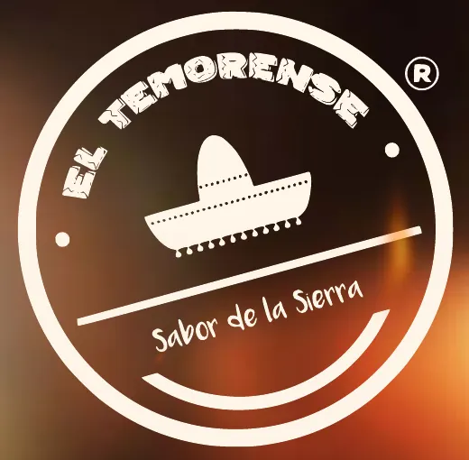

Código QR · menú y pedidos
El Temorense

Con su logo y sus colores. Va en mesas, mostrador, bolsas para llevar y volantes: con la cámara abre su carta completa y el cliente les pide por WhatsApp.
Preparado por LKM'r Company
Código QR · menú y pedidos
Con su logo y sus colores. Va en mesas, mostrador, bolsas para llevar y volantes: con la cámara abre su carta completa y el cliente les pide por WhatsApp.
Preparado por LKM'r Company